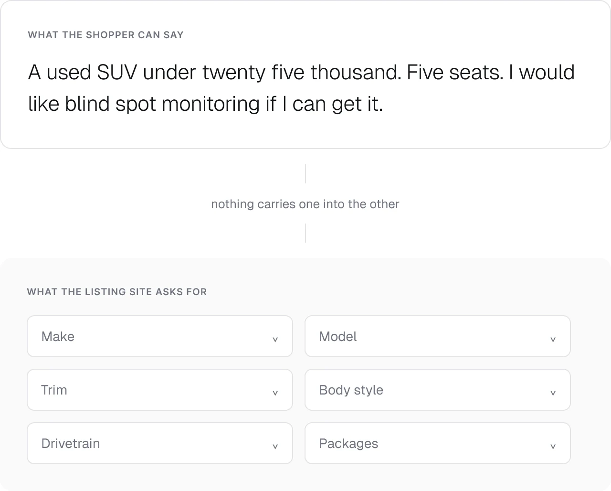
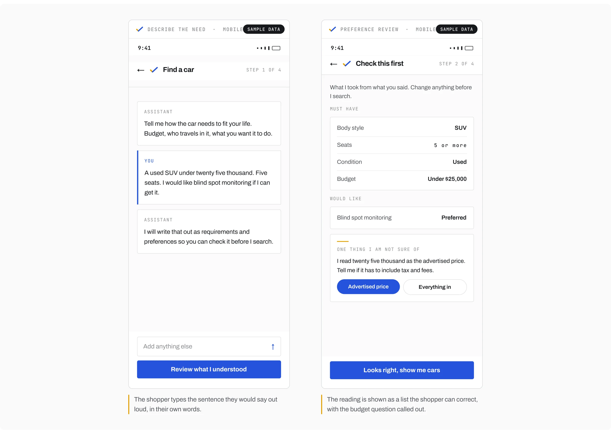
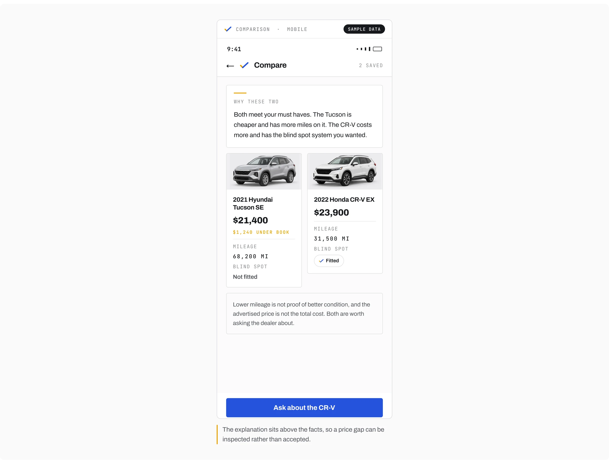
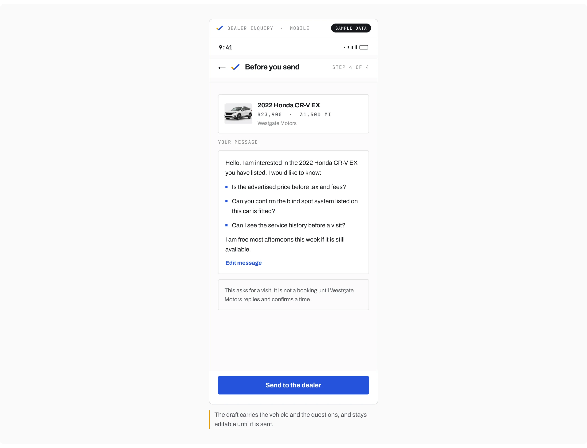
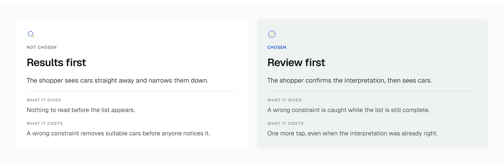
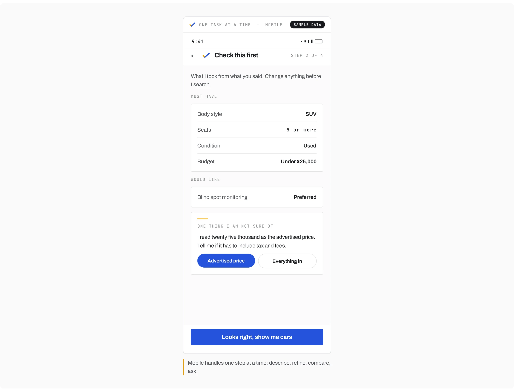
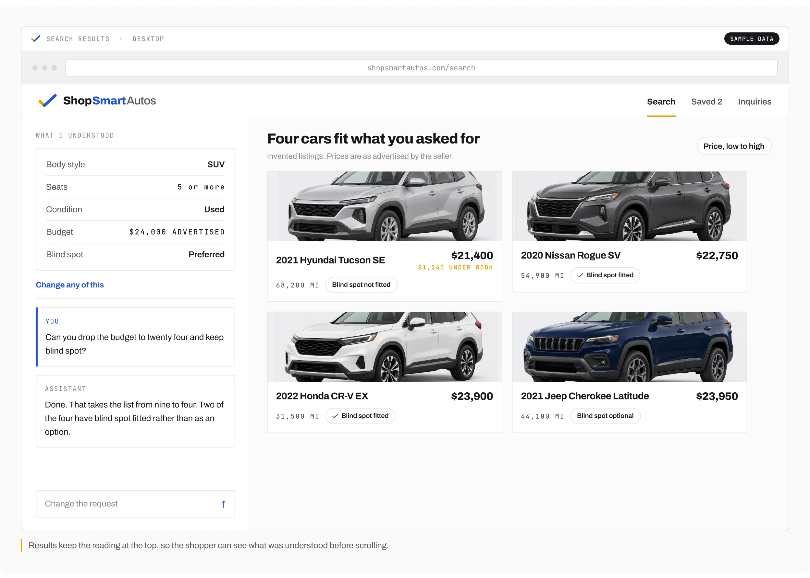
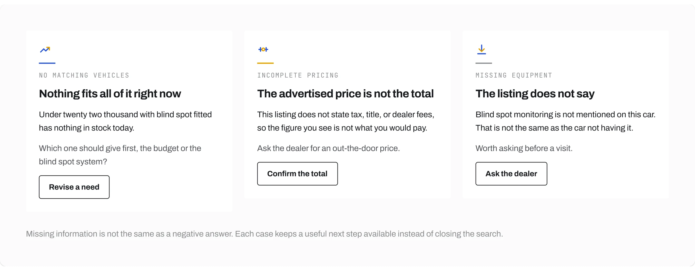

Independent concept / Mobile and web
ShopSmartAutos
From a description of everyday needs to a shortlist a shopper can inspect
I designed a mobile and web concept for someone who knows their budget, passenger needs, and preferences but has not chosen a make or model. The assistant turns that description into reviewable preferences, supports comparison, and helps prepare an inquiry to a dealership.
Role
Problem framing, interaction design, UI, and prototypes.
Conditions
The listings are invented.
The makes and models are real. Every listing, price, mileage, and dealership on these screens was written for this work, and no listing service is connected.
The assistant is scripted.
The replies follow an authored path. Nothing here is a working AI integration, and no inquiry is sent to anyone.
The problem
Begin with the need, not the model
Where the shopper starts
The project explores a specific starting point: the shopper can describe how the car needs to fit their life, but has not translated that into inventory filters.
What the assistant is for
The assistant's job is to help with that translation, not to make the choice on the shopper's behalf.
Where this goes
Every screen that follows starts from that sentence and keeps it editable, so the shopper corrects the assistant rather than starting again.

The interface
Turn the sentence into something checkable
The sentence
The example starts with a used SUV under $25,000, five seats, and a preference for blind spot monitoring.

Weight and the budget question
Those details do not all carry the same weight. I separated requirements from preferences and made the budget interpretation visible, including the question of whether taxes and dealer fees are included. The preference review lets the shopper correct that interpretation before it changes the results.
Comparison
Put the explanation beside the comparison
The explanation stays beside the facts
The comparison panel keeps the assistant's explanation beside the vehicle facts behind it. A price or mileage difference can then be inspected rather than accepted as a recommendation without context.

A price is only useful next to the reason it’s that price.
What a difference does not prove
I avoided treating lower mileage as proof of better condition or an advertised price as the complete cost. The comparison should clarify a trade-off, not hide an assumption inside it.
The inquiry
Keep the inquiry reviewable
The draft
The inquiry panel carries the selected vehicle and the shopper's questions into a draft message. The shopper reviews it before it is sent.

A request is not a booking
A visit request remains a request until the dealer responds. That distinction keeps the interface from presenting an unconfirmed arrangement as a booking.
The key decision
Review the interpretation before showing the cars
The two options
I explored showing results immediately, then refining them, versus asking the shopper to review the preferences first.

Why the extra step
I chose the review step. It adds a tap even when the interpretation is correct, but makes it easier to catch a wrong constraint before suitable vehicles disappear from the shortlist.
Two surfaces
Give each screen size a useful role
One task at a time
The mobile prototype handles one task at a time: describe, refine, compare, and ask.

The request beside the results
The desktop prototype places the assistant beside the results, so the shopper can adjust the request while keeping the inventory in view. These are two presentations of the same task, not separate product stories.

Uncertainty
Make uncertainty visible
Three different gaps
The prototype includes no matching vehicles, incomplete pricing, and missing equipment information. Each needs a different explanation: revise a need, confirm the total, or acknowledge that an equipment detail is not stated.

A gap is not a no
Missing information is not the same as a negative answer. The interface should preserve that distinction while keeping a useful next step available.
Delivery & scope
Two prototypes, invented listings
The listings are invented, the assistant replies are scripted, and inquiries are simulated. The prototypes cover preference review, comparison, inquiry, and the main incomplete information states.
- Two clickable Figma prototypes, mobile and responsive web
- Preference review, comparison, inquiry, and the incomplete information states
- The framing, the interaction design, the interface, and the prototypes are mine
- Invented listings, so every number on screen had to be visibly labeled as a sample